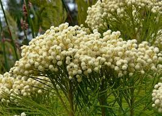

Bruniaceae
Bruniaceae is a family of around 80 species in 12 genera, consisting of evergreen shrubs and subshrubs almost entirely endemic to the Cape Floristic Region of South Africa. They are characterized by their heath-like (ericoid) appearance with small, often crowded leaves, and small flowers typically aggregated into dense terminal heads (capitula). The family constitutes most of the order Bruniales, which is sister to the order Apiales (carrot family).
Overview
Bruniaceae is a distinctive family almost exclusively confined to the fynbos biome within the Cape Floristic Region of South Africa, a global biodiversity hotspot. The plants are typically heath-like shrubs adapted to the nutrient-poor, acidic, sandy soils and fire-prone conditions characteristic of fynbos. Their small, often needle-like or overlapping leaves are adaptations to reduce water loss.
A defining feature of the family is the arrangement of their small, usually white or cream flowers into dense, often spherical or cone-shaped heads (capitula) located at the tips of branches. These flower heads, sometimes surrounded by bracts, contribute significantly to the visual identification of the family within the complex fynbos vegetation. Several species, known generically as "Cape greens" or by genus names like Brunia and Berzelia, are harvested from the wild or cultivated for the international cut flower and foliage trade due to their attractive and long-lasting flower/fruiting heads.
Phylogenetically, Bruniaceae is placed in its own order, Bruniales (along with the small Andean family Columelliaceae), within the Campanulid clade of Asterids. Bruniales is the sister group to the large and economically important order Apiales (containing carrots, ginseng, ivy, etc.), making Bruniaceae important for understanding the evolution of these major plant groups.
Quick Facts
- Scientific Name: Bruniaceae
- Common Name: (None widely used; Bruniads)
- Number of Genera: Approximately 12
- Number of Species: Approximately 80
- Distribution: Endemic primarily to Cape Floristic Region, South Africa.
- Evolutionary Group: Eudicots - Asterids - Campanulids - Bruniales
- Habit: Heath-like (ericoid) evergreen shrubs or subshrubs.
Key Characteristics
Growth Form and Habit
Evergreen shrubs or subshrubs, typically exhibiting a heath-like (ericoid) growth form with slender, often wiry stems. Adapted to fire-prone environments, often resprouting or reseeding after fire.
Leaves
Leaves are small, simple, arranged alternately, and often densely crowded or overlapping (imbricate) along the stems. Leaf shape is typically needle-like (acerose), scale-like, or triangular, contributing to the ericoid appearance. Margins are entire. Stipules are usually absent or minute.
Flowers and Inflorescence
Flowers are small, usually bisexual, and radially symmetrical (actinomorphic). They are characteristically aggregated into dense, terminal heads (capitula) or sometimes spikes or umbel-like clusters. These heads may be surrounded by an involucre of bracts.
- Calyx: Usually 5 sepals (sometimes 4), fused below into a tube (hypanthium) that is often partially or wholly fused to the ovary wall (adnate). The 5 (or 4) calyx lobes are typically small and persistent in fruit.
- Petals: Usually 5 (sometimes 4), separate or only slightly joined at the base, small, often white, cream, pinkish, or yellowish.
- Stamens: Usually 5 (sometimes 4), alternating with the petals. Filaments are attached near the base of the petals or to a nectar disk surrounding the ovary base.
- Ovary: Positioned half-inferior to fully inferior (rarely superior), composed of 1-3 (usually 2) fused carpels forming 1-3 (usually 2) locules. Placentation is typically apical-axile, with usually few (1-4) pendulous ovules per locule. A nectar disk is often present atop the ovary. A single style terminates in a simple or 2-3 lobed/branched stigma.
Fruits and Seeds
The fruit is small and dry, varying from an indehiscent, achene-like or nut-like structure to a dehiscent capsule opening by valves. The fruit is often retained within the persistent calyx and frequently remains aggregated within the dried flower head. Usually contains only 1 or 2 small seeds. Endosperm is generally present.
Chemical Characteristics
Plants contain iridoid compounds (common in Asterids), tannins, and saponins. Some species are known to accumulate aluminium. These chemical features, along with physical traits like small leaves, are adaptations to the nutrient-poor, acidic soils of their fynbos habitat.
Field Identification
Identifying Bruniaceae relies on recognizing its characteristic heath-like appearance, South African Cape endemism, and distinctive dense flower heads:
Primary Identification Features
- Habit: Evergreen heath-like (ericoid) shrub or subshrub.
- Location: Found almost exclusively in the Cape Floristic Region of South Africa (fynbos vegetation).
- Leaves: Small, alternate, simple, often crowded or overlapping (needle-like or scale-like).
- Inflorescence: Small flowers densely aggregated into terminal heads (capitula) or sometimes spikes, often appearing like buttons or pompoms.
- Ovary Position: Typically half-inferior or inferior.
Secondary Identification Features
- Flowers: Small, 4- or 5-merous, usually white, cream, or pinkish.
- Fruit: Small, dry fruit (achene/nut/capsule) often retained within the persistent flower head.
- Habitat: Characteristic of nutrient-poor, sandy, acidic soils in fynbos.
Seasonal Identification Tips
- Year-round: The ericoid shrub habit and small, crowded leaves are visible year-round.
- Flowering Season: The dense flower heads are most conspicuous during the main flowering period (often correlating with the Cape's winter rainfall or spring/summer, depending on species).
- Fruiting Season: Dried heads containing the small fruits often persist long after flowering, aiding identification. Many species show increased flowering activity after bushfires.
Common Confusion Points
- Ericaceae (Erica etc.): Abundant in fynbos with similar ericoid habits. However, Ericaceae usually have larger, often urn-shaped or bell-shaped flowers with fused petals (sympetalous) and typically superior ovaries (check flower base). Belong to Ericales.
- Asteraceae (e.g., some Metalasia, Syncarpha): Some fynbos Asteraceae are ericoid shrubs with flowers in heads (capitula). However, Asteraceae heads are structurally different, composed of specialized ray and/or disc florets with inferior ovaries developing into achenes (cypselas) usually topped by a pappus, and fused anthers. Belong to Asterales.
- Rhamnaceae (Phylica etc.): Some fynbos Rhamnaceae (Phylica) have ericoid leaves and flowers in dense heads often surrounded by showy bracts. However, they belong to Rosales and have different floral structures (e.g., often apetalous or petals hooded, superior ovary).
Look for the unique combination of ericoid shrub habit in Cape fynbos, alternate crowded leaves, dense terminal heads of small, 4-5 merous flowers, and usually half-inferior/inferior ovaries to identify Bruniaceae.
Field Guide Quick Reference
Look For:
- Heath-like shrub (ericoid)
- Endemic to Cape Floristic Region, SA
- Small, alternate, crowded/overlapping leaves
- Flowers in dense terminal heads/spikes
- Flowers small, white/cream/pink (4-5 merous)
- Ovary usually half-inferior or inferior
- Fruit small, dry, often in persistent head
Key Variations:
- Head shape (globose, conical, elongated)
- Presence/color of involucral bracts
- Leaf shape (needle vs. scale vs. broader)
- Flower color details
Notable Examples
Several genera are characteristic components of the fynbos vegetation and some are used commercially.

Berzelia lanuginosa
Common Button Bush, Kolkol
A common species in moist, sandy areas of the Cape region. Forms a shrub with fine, crowded, needle-like leaves and numerous small, dense, spherical white flower heads resembling buttons or pompoms, borne near the branch tips. Widely used in the cut flower trade.

Brunia noduliflora
Brunia, Stompie
Represents the type genus Brunia. These shrubs often have scale-like, overlapping leaves and bear dense heads of small flowers. After flowering, the heads often mature into woody, persistent structures containing the fruits. Various Brunia species are used as decorative foliage ('Brunia Balls').

Staavia radiata
Starburst Bush, Diamond Eyes
A distinctive species notable for its flower heads surrounded by an involucre of large, white, petal-like bracts, creating a starburst appearance around the central cluster of small flowers. Found in sandy coastal fynbos.
Phylogeny and Classification
Bruniaceae occupies a distinct position within the Asterid clade, placed in its own order, Bruniales, within the Campanulid subgroup. The order Bruniales contains only Bruniaceae and the small Andean family Columelliaceae (2 genera, ~5 species). Molecular phylogenetic studies have robustly established Bruniales as the sister group to the large and diverse order Apiales (which includes Apiaceae - carrots, Araliaceae - ginseng/ivy, Pittosporaceae, etc.).
This sister relationship is significant for understanding the evolution of major Asterid lineages, particularly the Campanulids. Despite morphological differences (e.g., Bruniaceae often have inferior ovaries and heads, while Apiales often have inferior ovaries and umbels), underlying genetic and possibly chemical traits link these two orders. The strong endemism of Bruniaceae in the Cape Floristic Region suggests a long evolutionary history within this biodiversity hotspot.
Position in Plant Phylogeny
- Kingdom: Plantae
- Clade: Angiosperms (Flowering plants)
- Clade: Eudicots
- Clade: Asterids
- Clade: Campanulids
- Order: Bruniales
- Family: Bruniaceae
Evolutionary Significance
Bruniaceae is important for several evolutionary reasons:
- Phylogenetic Position: Its placement as sister to Apiales is crucial for understanding the branching patterns and evolution of the Campanulid clade of Asterids.
- Cape Floristic Region Endemism: Represents a significant radiation within one of the world's most important biodiversity hotspots, showcasing adaptations to the unique fynbos environment (nutrient-poor soils, fire).
- Morphological Convergence: The evolution of heath-like (ericoid) leaves and dense flower heads (capitula) are examples of convergent evolution with unrelated families like Ericaceae and Asteraceae occupying similar habitats.
- Study of Fynbos Ecology: Bruniaceae species are integral components of the fynbos ecosystem, interacting with pollinators, herbivores, and fire regimes.